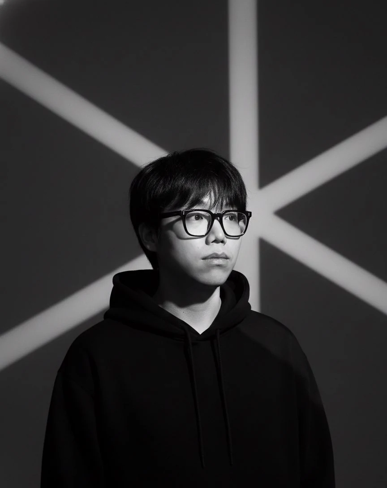

UI/UX DESIGNER · SEOUL → YORK → EDINBURGH
I design from evidence, find where I was wrong, and redesign.
I'm Eric (Tae Hyun Kim), a UI/UX designer from Seoul who spent about eight years in the UK. I like dense systems — stats, levels, budgets, rules — and the work of making them readable at a glance.

01 / ABOUT ME
Football taught me to read dense screens
I've watched Manchester United since 2012, when Park Ji-sung was playing there. I've played FIFA since FIFA 12, all the way into EA SPORTS FC, and Football Manager since FM19. I'm the player who studies the stat sheets, the team-colour bonuses and every balance patch to work out what the designers were going for — and when a game patches, I read the subreddit and Discord before the official notes.
That habit is how I design. A football game is thousands of numbers that have to make sense in seconds, and my own work keeps coming back to the same problem: Thryve turns health into five stat tracks and levels, BudgetBills turns spending into categories you can read at a glance, and V.I.T.A.L puts survival meters into a game HUD.
I build from research, make the thing myself, and change course when the evidence says I'm wrong. Nobody in my BudgetBills test could find "add card", and Thryve's first badges read as militaristic. Both got redesigned.
HOW I WORK
02 / WORK
Selected case studies
Each one shows the process, the numbers behind the decisions, and what I got wrong.

03 / ALSO ON THE TEAM SHEET
Games, HUDs, web and broadcast
-
V.I.T.A.L
MSc · Digital Playgrounds · Game HUDA HUD for an iris–brain implant in the year 2100, with Thirst, Hunger and Fatigue meters built on Maslow. The first version was all white; testing with three people pushed it to colour-coded meters on a six-colour aurora palette. Animated in After Effects (loopOut, rotoscoping).
-
Run Away
York · Team game · Unity · 2021A 3D escape game set in an airport, made over a 10-week agile cycle. As design lead and tester I set the core loop (explore → collect clues → evade), wrote the GDD, playtested every sprint to tune the difficulty curve and object placement, and scripted collision detection and tag-based triggers in Unity.
-
Auralis
MSc · Dynamic Web Design · Team of 3A three-person web project built around a Three.js scene. My part: rebuilding sign-up and login on the Fat-Free Framework, designing the logged-in state, moving us to a static landing page after testing, and making the call when the team couldn't agree.
-
Army film unit
Republic of Korea Army · 2022–24As a public-affairs soldier I planned, shot, edited and published 20+ training and campaign videos on my own. A storyboard template and production schedule cut each video from two weeks to ten days, and viewer reactions set the intro length and order of information for the next one.
-
Neon Cup
York · Esports broadcast · 2021Replay producer across two days of best-of-five live broadcast, peaking at about 2,000 concurrent viewers. I timed replays and highlights set by set from chat and drop-off patterns, with zero on-air incidents. When you show something matters as much as what you show.
04 / CONTACT
Let's talk about your next signing.
© 2026 Tae Hyun (Eric) Kim